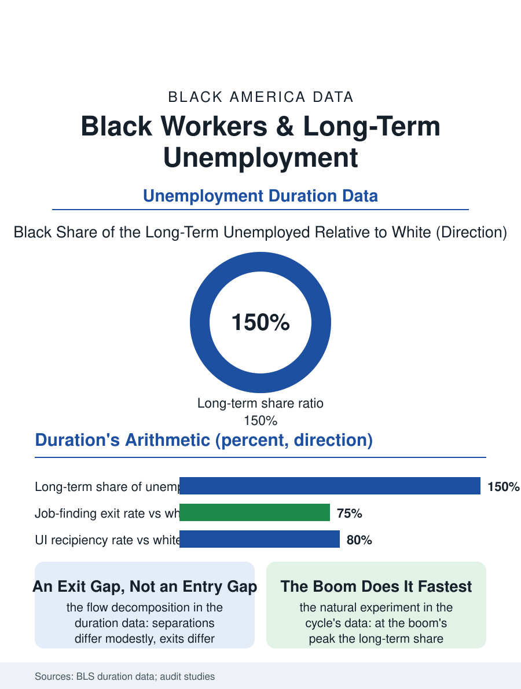

Black Employment
The Twenty-Seventh Week: Black Workers and Long-Term Unemployment
The spell lengthens because the exit is slower, and the spell then becomes the reason: the duration file's feedback loop. The long-term file.

Long-term unemployment, the spell past six months, is where the unemployment file turns from a statistic into a biography: Black workers constitute a share of the long-term unemployed well above their share of the jobless, their spells running longer at every education level, and the spell itself then becomes the next employer's reason, in the audit studies' cruel demonstration. This article reads the long-term file.
Duration's Distribution
The Bureau of Labor Statistics' duration data give the file its base: the mean and median spell for the Black jobless run ahead of the white figures across the cycle, the gap narrowing at the boom's peak without closing, and the long-term share, the fraction of the unemployed past the twenty-six weeks the insurance file's benefit exhausts, runs in the Black data at multiples of the white share in the downturns' aftermath and at a stubborn premium in the recoveries, so that each cycle leaves a residue of the long-term unemployed that is disproportionately Black, and the residue compounds across the cycles into the discouraged and the marginally attached of the survey's wider measures. The flow data underneath assign the cause with unusual precision: the separation rates, the entries into unemployment, differ by race modestly in the modern data, while the exit rates, the monthly probability of the job found, differ substantially, the duration gap being an exit gap, a hiring file's fact rather than a firing file's, which locates the intervention where the audit studies had already pointed.
The Spell as a Signal
The correspondence experiments give the duration its mechanism: the fictitious resumes randomized by the spell's stated length find the callback falling with the duration for every group, and falling from a lower floor and to a lower floor for the Black-named applicant, so that the long-term unemployed Black worker faces the market's two discounts multiplied, each month of the spell deepening the very penalty that lengthens it, a feedback the economists formalize as duration dependence and the worker experiences as the silence's thickening. The skill and network files decay on the same schedule in the longitudinal data, the references cooling, the occupation's tools updating past the idled hand, so that the re-employment wage's penalty, the displacement literature's persistent ten to twenty percent, is the spell's price collected over the career. The unemployment insurance file is the spell's floor: the benefit's replacement rate and its duration, the state system's variation making the twenty-sixth week a cliff in the stingy states and a slope in the generous ones, with the Black claimant's recipiency rate, the share of the jobless actually receiving the benefit, running below the white rate in the program data for the eligibility and the filing reasons the administrative burden file enumerates.
The Exit's Design
The long-term file closes on the exit's design, because the duration's causes being hiring-side, the remedies that work in the evaluations are the hiring-side ones: the subsidized and transitional employment that gives the spell a present tense and the employer a trial without the resume's gap, the re-employment services' early intervention before the spell hardens into the signal, and the audit's own implication, the structured hiring that blinds the screener to the spell and the name until the work sample speaks, whose adoption curve in the large employers' current practice is the file's forward variable. The tight labor market is the file's great natural experiment and its consistent result: at the cycle's peak, when the employers' need overwhelms their screens, the long-term share collapses in every demographic and the Black duration gap reaches its narrowest, the boom accomplishing in a year what the programs attempt in a decade, an argument the macroeconomists enter for running the economy hot as an equity instrument in its own right. The bureau counts the durations each month. The file's last entry is the twenty-seventh week, the benefit exhausted and the applications unanswered, in the household whose calendar the spell has eaten, a week the statistics record as a duration and the family as the emergency's normalization, and whose shortening is the difference between the recovery the headline announces and the one the neighborhood can feel. The week's shortening is the recovery's only honest unit.
More in Black Employment
The Black Unemployment Rate: The Two-to-One Pattern
Black unemployment runs at roughly twice the White rate — 5.5 percent against 3.3 percent in annual averages — a ratio stable across five decades of federal data. How it is measured and why it persists.
Black Median Weekly Earnings: The 80-Cent Ratio
Black full-time workers earn a median of about $900 a week — roughly 80 cents for every dollar White workers earn. The BLS earnings data by group, gender, and occupation.
Black Labor Force Participation: Working at National Rates
Black labor force participation runs at roughly the national rate — and Black women participate at higher rates than White women. The BLS participation data.
Source: Bureau of Labor Statistics unemployment duration data; National Bureau of Economic Research duration-dependence audit studies.